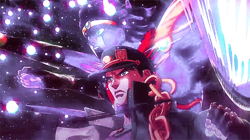

JoJo's
Bizarre Adventure
JoJo’s Bizarre Adventure es una reconocida serie de manga y anime creada por Hirohiko Araki en 1987. A lo largo de sus múltiples partes, narra las aventuras de distintas generaciones de la familia Joestar, cada una enfrentando desafíos únicos en diferentes épocas y lugares del mundo. La obra se destaca por su estilo artístico innovador, sus batallas creativas y la presencia de poderes especiales llamados Stands, que representan el espíritu y la fuerza interior de cada personaje.
Más allá de su acción y fantasía, JoJo’s Bizarre Adventure se ha convertido en un fenómeno cultural por su originalidad, sus referencias a la música y la moda occidental, y por transmitir mensajes sobre el coraje, la herencia familiar y la lucha contra el destino. Con una estética única y personajes memorables, la serie se consolidó como una de las más influyentes del anime y el manga moderno.
Habilidades
Hamon
El Hamon es una técnica especial introducida por primera vez en la Parte 1: Phantom Blood del manga JoJo’s Bizarre Adventure, creado por Hirohiko Araki. Se trata de una forma de energía vital que los personajes pueden generar mediante el control de su respiración. Esta energía fluye a través del cuerpo del usuario en forma de “ondas” similares a las del Sol, razón por la cual también se conoce como “energía solar” o “energía de la vida”.
El Hamon permite realizar hazañas sobrehumanas, como aumentar la fuerza, la velocidad o la resistencia, e incluso sanar heridas leves. Su principal función, sin embargo, es combatir a los vampiros y otras criaturas no muertas, ya que la energía del Hamon imita la luz del sol, una de las debilidades más letales para esos enemigos. Además, puede transmitirse a través de distintos materiales como el agua, el metal o incluso las burbujas, lo que permite ataques a distancia o el uso creativo del entorno durante el combate.
Los usuarios de Hamon poseen un entrenamiento riguroso que requiere una respiración rítmica y controlada, capaz de expandir el flujo de energía vital por todo el cuerpo. Entre los practicantes más destacados se encuentran Jonathan Joestar, Will A. Zeppeli y Joseph Joestar, cada uno con un estilo distinto: Jonathan lo usa con honor, Zeppeli con sabiduría y Joseph con astucia. Sus técnicas más reconocidas son el Sunlight Yellow Overdrive, el Scarlet Overdrive y el Metal Silver Overdrive.
Stands
los Stands son manifestaciones sobrenaturales del espíritu o energía vital de una persona. Estas entidades reflejan la fuerza interior, la personalidad y, en muchos casos, los deseos de su usuario, conocido como “usuario de Stand”.
Un Stand puede tener una forma humanoide, animal o abstracta, y cada uno posee habilidades únicas que van desde una simple fuerza física extraordinaria hasta poderes más complejos, como manipular el tiempo, el espacio o incluso los pensamientos. Generalmente, solo las personas que también poseen un Stand pueden verlos, y cualquier daño que reciba el Stand también afecta directamente a su usuario. Cada Stand posee unas stats que indican el Poder, Velocidad, Rango de ataque, Durabilidad, Precision y Potencia de ataque
Los nombres de los Stands suelen estar inspirados en bandas de música, canciones o cartas del tarot, lo que se ha convertido en una característica distintiva de la serie. Por ejemplo, Star Platinum representa fuerza y precisión; The World puede detener el tiempo; y Crazy Diamond tiene el poder de reparar objetos o curar heridas.
El término “Stand” fue elegido por Araki porque simboliza algo que “se mantiene de pie junto a su usuario”, es decir, una representación espiritual que lo acompaña y protege. A lo largo de las distintas partes de la obra, los Stands se convierten en un elemento central, aportando acción, estrategia y simbolismo al desarrollo de la historia.
Reinicio Del Universo
En jojo's se desarrolla en un mundo donde el autor divide la historia en dos universos distintos: el universo original y el universo alternativo o reiniciado. Esta división ocurre a partir de los acontecimientos del final de la sexta parte del manga.
El universo original comprende las Partes 1 a 6 de la obra. En él se narra la historia de varias generaciones de la familia Joestar, desde el siglo XIX hasta la época moderna. En este mundo se establecen las bases principales de la serie: los conflictos familiares, la aparición de los Stands (manifestaciones del espíritu) y la eterna lucha contra el villano DIO. Las seis primeras partes incluyen: Phantom Blood, Battle Tendency, Stardust Crusaders, Diamond is Unbreakable, Golden Wind y Stone Ocean. Esta última es especialmente importante, ya que su desenlace provoca el reinicio del universo debido al poder del Stand Made in Heaven, utilizado por el villano Enrico Pucci.
A partir de este evento, surge el universo alternativo, que abarca las Partes 7 a 9: Steel Ball Run, JoJolion y The JOJOlands. En este nuevo mundo aparecen personajes y lugares diferentes, aunque algunos comparten nombres o rasgos con los del universo original. Las historias mantienen el estilo característico de Araki, pero presentan nuevas interpretaciones de los temas clásicos de JoJo, como el destino, la identidad y el poder del espíritu humano.